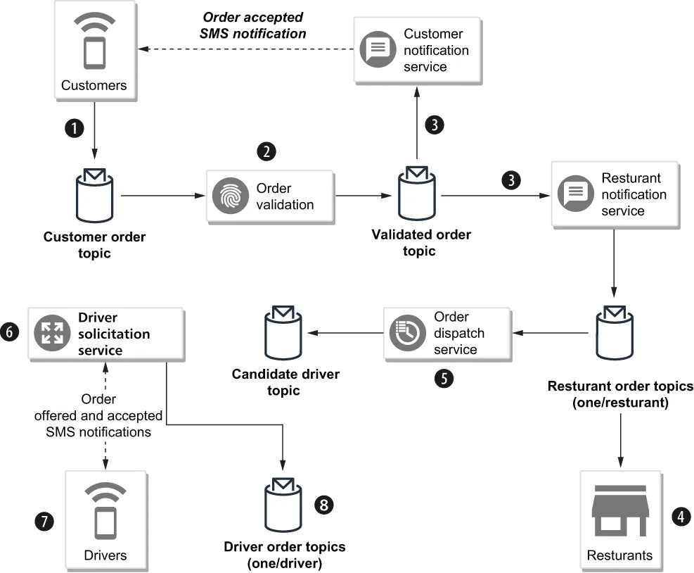

Let’s consider a scenario from the GottaEat food delivery company that allows customers to find and order food from any participating restaurant in the company’s network and have it delivered to any location they choose. Orders can be placed via the company website or mobile application. Delivery of the food order is handled via a network of independent drivers who are required to download a specialized mobile application onto their smartphones. The drivers will receive notifications of food orders that are available for delivery within their area and have the option of accepting or declining the orders.
我们来看 GottaEat 这家外卖公司的一个场景：它让客户能从公司网络中的任何一家入驻餐厅找到餐品并下单，然后送到客户指定的任意地点。客户可以通过公司网站或移动应用下单。餐品的配送则由一个独立司机网络来完成，这些司机需要在自己的智能手机上下载一个专门的移动应用。司机会收到所在区域内可供配送的餐品订单通知，并可以选择接受或拒绝这些订单。
Once an order has been accepted by the driver, it is added to their itinerary for the evening, and the driver will receive directions to the restaurant for pickup and the customer location for delivery inside the driver’s mobile application. Participating restaurateurs are notified of incoming orders and are responsible for reviewing the incoming orders and providing a time window for pickup. This information allows the system to better schedule the drivers and prevent them from arriving too early (and wasting their time) or too late (and the food being cold or late).
订单一旦被司机接受，就会被加入他当晚的行程单；司机则会在自己的移动应用中收到前往餐厅取餐的路线，以及送达客户位置的路线。入驻餐厅会收到 incoming 订单的通知，并负责审阅这些 incoming 订单、给出一个可取餐的时间窗口。这些信息让系统能更好地调度司机，避免他们到得太早（白白浪费时间）或太晚（导致食物变凉或送达延误）。

Figure 7.12 Order entry use case
图 7.12 订单录入用例
As the lead architect on this project, you have decided that a microservices architecture is best suited to meet the needs of the business. It also allows you to model the problem as an event-driven problem, which lends itself nicely to message-based communication between independent microservices. To this end, you have sketched out the high-level design for the order entry use case shown in figure 7.12 and need to determine how to implement this design using Pulsar. The overall flow of the use case is as follows:
作为这个项目的首席架构师，你已经认定微服务架构最适合满足业务需求。它还让你能够把这个问题描述成一个事件驱动的问题，而事件驱动天然就适合用独立微服务之间基于消息的通信来实现。为此，你已经勾画出了图 7.12 中所示订单录入用例的高层设计，现在需要确定如何用 Pulsar 来实现这个设计。该用例的整体流程如下：
Customers submit their orders using the company website or mobile application, and they are published to the customer order topic.
客户通过公司网站或移动应用提交订单，订单被发布到客户订单主题。
An order validation service subscribes to the customer order topic and validates the order, including taking the provided payment information, such as the credit card number or gift card, and obtaining confirmation of payment.
订单校验服务订阅客户订单主题并对订单进行校验，其中包括接收所提供的支付信息（例如信用卡号或礼品卡）并取得付款确认。
Orders that are validated get published to the validated order topic and are consumed by both the customer notification service (e.g., sending an SMS message to the customer confirming the order was placed on the mobile app) and the restaurant notification service that publishes the order into the individual restaurant order topic associated with the order (e.g., persistent://resturants/ orders/
通过校验的订单会被发布到已校验订单主题，并同时被两个服务消费：客户通知服务（例如向客户发送一条短信，确认订单已在移动应用中提交成功），以及餐厅通知服务——后者把该订单发布到与该订单关联的某个餐厅专属订单主题中（例如 persistent://resturants/orders/
The restaurants review the incoming orders from their topic, update the status of the order from new to accepted, and provide a pickup time window of when they feel the food will be ready.
各家餐厅从自己的主题中审阅 incoming 订单，把订单状态从 new 更新为 accepted，并给出他们预计餐品何时可以备好的取餐时间窗口。
The order dispatcher service is responsible for assigning the accepted orders to drivers and uses Pulsar’s regex subscription capability to consume from all of the individual restaurant order topics (e.g., persistent://resturants/ orders/) and filters on a status of accepted. It uses that information, along with the driver’s existing list of deliveries, to select a handful of candidate drivers to offer the order to and then publishes this list to a candidate driver’s topic.
订单派发服务负责把已接受的订单指派给司机，它利用 Pulsar 的正则表达式订阅能力来消费所有餐厅专属订单主题（例如 persistent://resturants/orders/），并按状态为 accepted 进行过滤。它结合这些信息以及司机现有的配送清单，筛选出若干位候选司机来向其派单，然后把这份名单发布到候选司机主题。
The driver solicitation service consumes from the candidate driver’s topic and pushes a notification to each of the drivers in the list, offering them the order. When one of the drivers accepts the order, a notification is sent back to the solicitation service, which in turn publishes the order to the driver’s individual order topic (i.e., persistent://drivers/orders/
司机招募服务消费候选司机主题，并向前述名单中的每一位司机推送通知，向他们派发这单订单。当其中一位司机接受了订单，一条通知就会回传给招募服务，后者随即把该订单发布到这位司机的专属订单主题（即 persistent://drivers/orders/
Additional use cases are required to handle the routing of the driver, the notification of the customer regarding the order status, etc. But for now, I will focus on the order entry use case and how Pulsar’s schema registry will simplify the development of these microservices. Let’s examine the structure of the GitHub project associated with this chapter of the book. For this section, please refer to the code in the 0.0.1 branch. As you can see, it is a multi-module maven project that contains three submodules that I will discuss in the upcoming sections.
还有其他一些用例需要处理司机的路线规划、就订单状态通知客户等等。但现在，我将聚焦于订单录入这个用例，以及 Pulsar 的 schema registry 如何简化这些微服务的开发。我们先来看看与本书本章配套的 GitHub 项目的结构。就本节而言，请参照 0.0.1 分支中的代码。可以看到，这是一个多模块的 Maven 项目，包含三个子模块，我将在接下来的几节中逐一讨论它们。